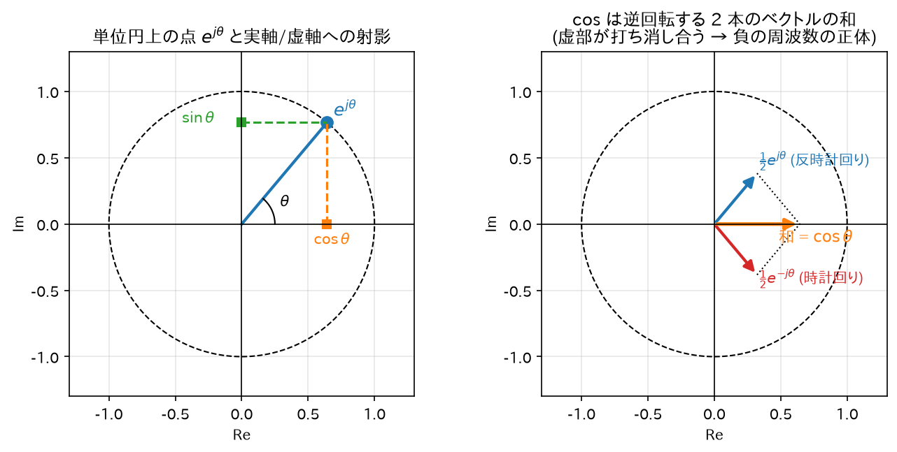

Chapter 02
複素指数関数とオイラーの公式
信号処理では正弦波を\(\cos\)や\(\sin\)のままではなく、複素指数関数\(e^{j\omega n}\)で扱う。 「なぜわざわざ複素数を持ち出すのか」を含めて、必要な数学をすべて導出する。
この章のゴールを先に言う. これから「\(e^{j\theta} = \cos\theta + j\sin\theta\)」という、一見おかしな式を扱う。 指数関数と三角関数という、高校では別々に習った関数が、虚数\(j\)を挟むと同じものになる——という主張である。
なぜこんなものを持ち出すのか。理由はたった 1 つ、計算が劇的に楽になるから。
- \(\cos\)と\(\sin\)のまま計算すると、加法定理（\(\cos(A+B) = \cos A\cos B - \sin A \sin B\)…）が 次から次へと出てきて、式がすぐ 2 行 3 行に膨れ上がる。
- 複素指数なら、同じ内容が指数法則\(e^A e^B = e^{A+B}\)の一撃で済む。掛け算が足し算に化ける。
つまり複素数は「難しさを持ち込む道具」ではなく、面倒な三角関数の計算を消すための道具である。 高校数学で \(\log\) を習ったとき「掛け算が足し算になって計算が楽になる」と教わったのと、動機は全く同じ。
この章では ①その便利な式の正体（§1〜§3）→ ②それがフィルタ理論でなぜ決定的なのか（§4）→ ③この先ずっと使う計算道具（§5）、の順に進む。
1. オイラーの公式の導出
主張
導出（テイラー級数による）
使う道具: テイラー級数（マクローリン展開）. これは「関数を、\(x\)のべき乗（\(1, x, x^2, x^3, \dots\)）の無限に続く足し算で書き直したもの」である。 なぜそんなことをするかというと、べき乗の足し算なら、指数関数だろうが三角関数だろうが同じ土俵で比べられるから。 今回はまさにそれが狙いで、\(e^x\)・\(\cos\theta\)・\(\sin\theta\)の 3 つを同じ「べき乗の足し算」の形に翻訳し、 並べて見比べると関係が浮かび上がる、という筋書きになっている。
（3 つの展開式そのものは高校〜大学初年度の公式なので、ここでは結果を借りる。 「\(x\)が小さいとき\(e^x \approx 1 + x\)」のような近似式を無限に続けたもの、と思えばよい。）
指数関数、余弦、正弦のテイラー級数（マクローリン展開）はそれぞれ:
\(e^x\)の級数に\(x = j\theta\)を代入する（この級数は複素数でも絶対収束するので代入が正当化される）:
\(j\)のべき乗は 4 周期で循環する:\(j^0=1, j^1=j, j^2=-1, j^3=-j, j^4=1,\dots\)。これを使って各項を整理:
実部と虚部に分けてまとめる:
よって
直感
\(e^{j\theta}\)は複素平面上の単位円周上の点であり、\(\theta\)はその角度。 \(\theta\)を時間とともに増やすと、点は単位円上を反時計回りにぐるぐる回る。
正弦波は「回転する点の影」: 単位円上を回る点を実軸に射影すると\(\cos\theta\)、虚軸に射影すると\(\sin\theta\)が得られる。 観覧車のゴンドラに横から光を当てたときの影が上下に単振動するのと同じ。
2. cos と sin を複素指数で表す（逆向きの公式）
オイラーの公式で\(\theta \to -\theta\)とすると、\(\cos(-\theta)=\cos\theta\)、\(\sin(-\theta)=-\sin\theta\)より:
2 式を足す:
2 式を引く:
直感: 実信号の\(\cos\)は「右回りの回転と左回りの回転を半分ずつ足したもの」。 だから実信号のスペクトルには必ず正負両方の周波数が対で現れる（負の周波数 = 逆回転）。

3. 複素数の極形式と演算
複素数\(z = a + jb\)は極形式で書ける:
（\(r\)の導出:\(|z|^2 = z z^* = (a+jb)(a-jb) = a^2 - (jb)^2 = a^2 + b^2\)。 \(\phi\)は\(a = r\cos\phi, b = r\sin\phi\)から。象限は\(a, b\)の符号で決める。）
掛け算は「大きさを掛けて、角度を足す」:
これは指数法則\(e^{A}e^{B} = e^{A+B}\)から直ちに従う。 （指数法則自体の確認: 級数の積をコーシー積で展開すると \(\left(\sum_k \frac{A^k}{k!}\right)\left(\sum_l \frac{B^l}{l!}\right) = \sum_m \frac{1}{m!}\sum_{k=0}^{m}\binom{m}{k}A^k B^{m-k} = \sum_m \frac{(A+B)^m}{m!}\)、 最後の等号は二項定理。\(A, B\)が可換な複素数なら成立する。）
この「掛け算 = 回転と伸縮」という見方が、後の極・零点によるフィルタ特性の図形的解釈（06 章）の土台になる。
4. なぜ信号処理は複素指数を使うのか — LTI システムの固有関数
これが最重要ポイント。答えを先に言うと:
複素指数\(e^{j\omega n}\)を LTI システム（フィルタ）に入れると、出てくるのは同じ\(e^{j\omega n}\)の定数倍。 つまり複素指数はフィルタを通しても「形が変わらない」唯一の信号族である。
なぜこれがそんなに嬉しいのか. フィルタに一般の信号を入れると、出てくる波形は入力とは似ても似つかない形に変わる（それがフィルタの仕事なので当然）。 ところが複素指数だけは例外で、入れたものと同じ形が、大きさと位相だけ変えられて出てくる。
これの何が嬉しいか——「どんな信号も複素指数の寄せ集めで書ける」（これがフーリエ変換の主張、04 章）ので、 入力を複素指数にバラす → 各成分に倍率を掛ける → 足し戻す、という 3 手順で任意の入力への出力が出せる。 フィルタの働きが「周波数ごとの倍率表」1 枚に要約されてしまう。イコライザーのスライダーがまさにこれで、 あの「低音を +3dB、高音を −5dB」というつまみは、この倍率表を直接いじっている。
導出
インパルス応答\(h[k]\)を持つ LTI システム（詳細は 03 章。ここでは出力が \(y[n] = \sum_{k} h[k] x[n-k]\)で与えられることだけ使う）に\(x[n] = e^{j\omega n}\)を入力する:
\(e^{j\omega n}\)は\(k\)に依存しないので和の外に出せる:
- 出力 = 入力 × 複素定数\(H(e^{j\omega})\)。線形代数の言葉では\(e^{j\omega n}\)は固有ベクトル（固有関数）、\(H(e^{j\omega})\)は固有値。 （「固有」という言葉に身構える必要はない。「通しても形が変わらず、大きさと位相だけが変わるもの」を固有〇〇と呼ぶ、というだけ。 たとえば「赤いセロファンを通しても、白色光は色が変わるが、赤色光は明るさが変わるだけで色は赤のまま」—— この赤色光にあたるのが\(e^{j\omega n}\)である。）
- \(H(e^{j\omega})\)を周波数応答と呼ぶ。極形式\(H(e^{j\omega}) = |H(e^{j\omega})| e^{j\angle H(e^{j\omega})}\)で書くと:
- \(|H(e^{j\omega})|\): その周波数の振幅を何倍にするか（振幅特性）
- \(\angle H(e^{j\omega})\): その周波数の位相を何ラジアンずらすか（位相特性）
実信号での確認（導出）
実際の入力\(x[n] = \cos(\omega n)\)に対する出力を、上の結果から導く。 \(\cos(\omega n) = \frac{1}{2}(e^{j\omega n} + e^{-j\omega n})\)と線形性より:
\(h[k]\)が実数なら\(H(e^{-j\omega}) = \sum_k h[k] e^{j\omega k} = \left(\sum_k h[k] e^{-j\omega k}\right)^* = H(e^{j\omega})^*\)（共役対称性）。 \(H(e^{j\omega}) = A e^{j\phi}\)（\(A = |H|\),\(\phi = \angle H\)）とおくと:
つまり 「\(\cos\)を入れると、振幅が\(|H|\)倍、位相が\(\angle H\)ずれた\(\cos\)が出てくる」。∎
直感のまとめ
- フィルタ設計とは「各周波数\(\omega\)に対する倍率\(|H(e^{j\omega})|\)の形を望み通りに作る」こと。 ローパスフィルタなら「低い\(\omega\)で倍率 1、高い\(\omega\)で倍率 0」。
- \(\cos, \sin\)のまま計算すると加法定理だらけの計算地獄になるが、複素指数なら「掛け算 = 回転」だけで済む。 複素数は面倒を増やす道具ではなく、三角関数の面倒な計算を消すための道具である。
5. 等比級数の和（今後頻繁に使う公式）
なぜ今これをやるのか. IIR フィルタは「前の出力を少し混ぜて次の出力を作る」という仕掛けなので、 一発の入力の影響が\(a, a^2, a^3, \dots\)と掛け算で薄まりながら永遠に残る（07 章）。 その総量を知るには\(1 + a + a^2 + a^3 + \cdots\)という「等比級数」の和が要る。 そして「この和が有限か無限か」がそのままフィルタが安定か暴走かの分かれ目になる。 この先 05・06・07 章で繰り返し出てくる主役なので、ここで公式にしておく。
有限和:\(S_N = \sum_{k=0}^{N-1} r^k = 1 + r + r^2 + \cdots + r^{N-1}\)とおく。
（中間の項がすべて打ち消し合う）。\(r \neq 1\)で割って:
無限和:\(|r| < 1\)のとき\(N \to \infty\)で\(|r^N| = |r|^N \to 0\)なので:
\(|r| \geq 1\)では項が 0 に収束しないため級数は発散する。 「\(|r|<1\)でのみ収束」という条件が、後の Z 変換の収束領域（ROC）と IIR の安定条件の正体である。
この 1 行が後で効いてくる場面. 「\(|r| < 1\)なら和は有限、\(|r| \geq 1\)なら発散」——この当たり前に見える境目が、 06 章では「極が単位円の内側なら安定、外なら発振」という、IIR 理論で最も重要な定理そのものになる。 極\(p\)とは、いま言う\(r\)の正体であり、「単位円」とは\(|r| = 1\)という境界線のこと。 つまり本章のこの公式は、フィルタが暴走するかどうかを決める判定条件を、先に数学の形で用意していることになる。